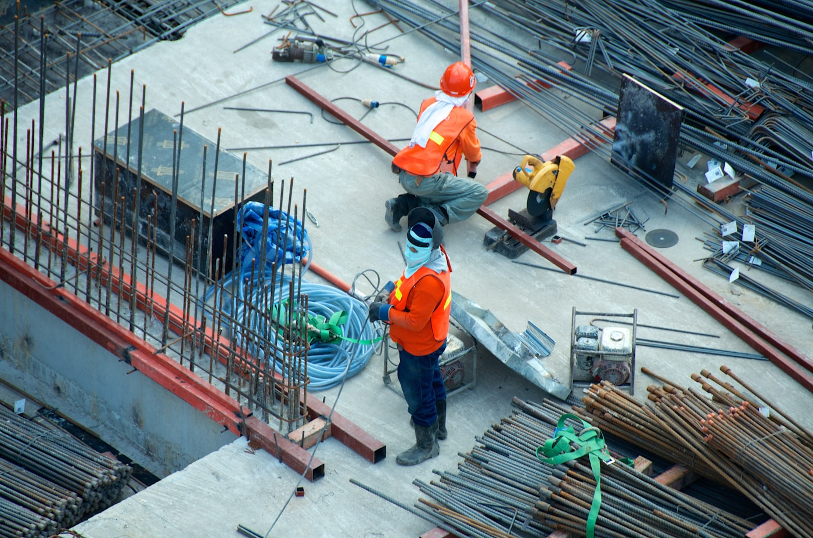

Od 1999
roku
NOWO-GLAS zatrudnia 16 wysoko wykwalifikowanych pracowników, dysponuje nowoczesnym parkiem maszynowym, stosuje nowoczesne technologie, co pozwala usprawnić produkcję. Zastosowanie najnowszej technologii produkcji oraz materiałów renomowanych firm europejskich sprawia, że szyby znakomicie spełniają najwyższe wymagania w zakresie: izolacyjności termicznej, izolacyjności akustycznej, bezpieczeństwa i estetyki.
NOWO-GLAS jest od 1999 roku średniej wielkości firmą z siedzibą w Nowogardzie, której podstawowym wyrobem są szyby zespolone. Bazę firmy stanowi zakład produkcyjny o łącznej powierzchni 1500 m². Obecne możliwości produkcyjne firmy szacowane są na 10 000 m² szyb zespolonych w skali miesiąca.
Kontakt
Certyfikat
ISICQ
NOWO-GLAS to innowacyjne szyby termoizolacyjnych, wielofunkcyjnych systemów szyb zespolonych. Jakość szyb została potwierdzona znakiem jakości „ISICQ" Instytut Szkła i Ceramiki w Warszawie. Za firmą NOWO-GLAS stoją największe na świecie huty szkła, które są dostawcami wysokiej jakości szkła bazowego, w tym szkła powlekanego metodą magnetronową.
Dokumenty i certyfikaty
NOWO-GLAS producent
szyb zespolonych
NOWO-GLAS produkuje wysokiej jakości szyby zespolone o różnorodnych właściwościach i funkcjach. Szyby, którymi zainteresowaliśmy środowiska producentów stolarki, architektów, budowlane firmy wykonawcze, projektantów i dekoratorów wnętrz.
Ornamenty
Posiadamy w swojej ofercie szeroki wybór ornamentów.